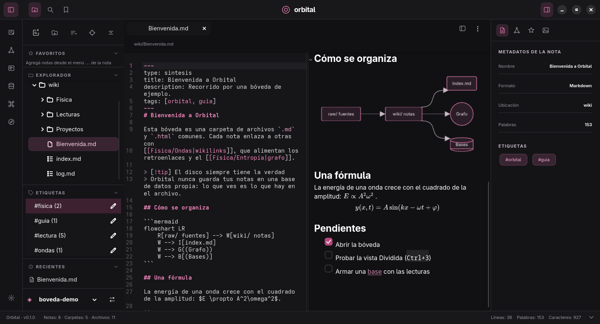

Notas en Markdown y HTML, en archivos que son tuyos
Orbital es una app de notas para Linux, hecha en Rust con GTK4 y libadwaita.
Rápida, sin conexión y libre: tus notas son archivos .md y .html comunes
en una carpeta.

Qué es
- El disco tiene la verdadCada nota es un archivo que podés abrir con cualquier editor, versionar o copiar. Sin formatos propietarios.
- RápidaAbre una bóveda de 5000 notas en menos de medio segundo en un equipo modesto.
- Sin conexiónTodo funciona sin red. Orbital no tiene cuentas ni servidores, y no recoge datos.
- Para pensarEnlaces y grafo, bases, canvas, fórmulas y gráficos, diagramas, galerías y presentaciones.
Google Drive, opcional
Si querés, Orbital puede mantener una copia de tu bóveda en tu propio Google Drive, con un proyecto de Google Cloud que creás vos. Orbital se conecta directo con Google desde tu equipo: no hay ningún servidor de Orbital en el medio. Los detalles están en la política de privacidad.
Licencia
Orbital es software libre bajo la licencia GPL-3.0 o posterior. Su uso se rige por las condiciones de servicio.